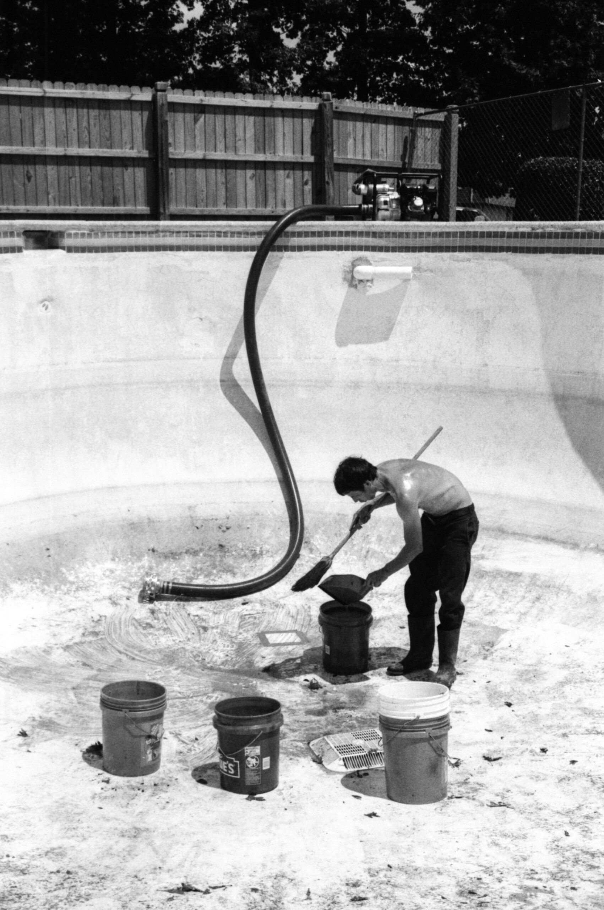

HOW TO FIND A POOL
Finding the best empty swimming pools for skating can be a bit of an adventure. Here's a full comprehensive guide to follow:
• Research Local Pools: Start by researching local public and private swimming pools in the area. Look for pools that are less frequently
used or abandoned.
• Online Maps and Apps: Use online maps like Google Maps or skateboarding apps that allow users to mark spots for skating. Sometimes,
other skaters may have already discovered and marked empty pools in your area.
• Explore Abandoned Areas: Keep an eye out for abandoned properties or areas that might have neglected swimming pools. However, be
cautious and prioritize safety when exploring such places.
• Ask Locals: Talk to other skaters in your area or even ask locals if they know
of any empty pools suitable for skating. Sometimes, word of
mouth can lead you to hidden gems.
• Scout the Location: Once you've identified potential spots, visit them in person to assess their suitability for skating. Look for pools with
smooth surfaces, good transitions, and minimal debris.
•Share the Love: If you discover a great skate spot, consider sharing it with other skaters responsibly. However, be mindful of
overcrowding and the need to preserve the spot for future use.
